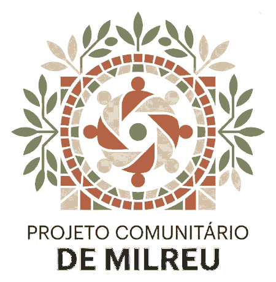
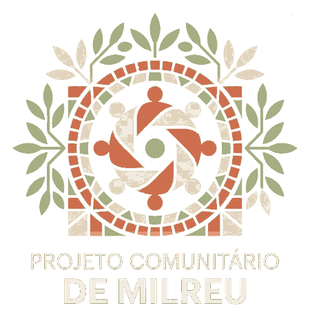
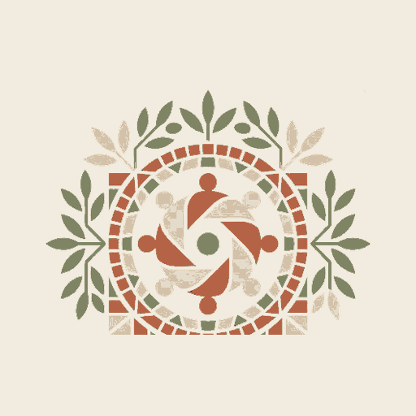
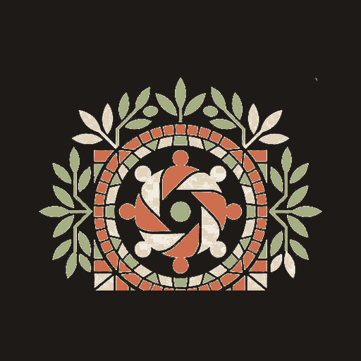
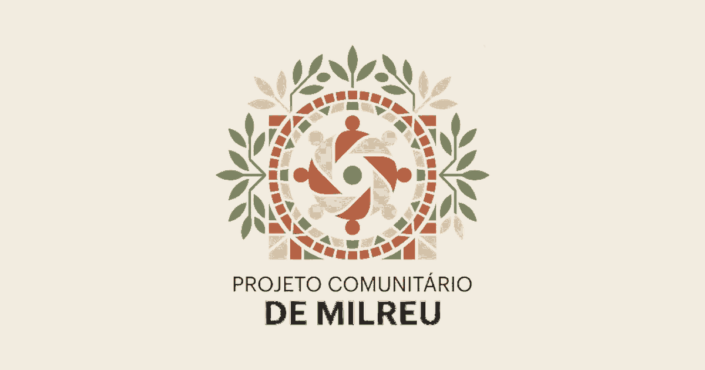

Identidade
Uma marca principal, várias iniciativas
O Projeto Comunitário de Milreu é a marca guarda-chuva. Museu de Memórias e Milreu Proteus permanecem subordinados.
Projeto Comunitário de Milreu
Museu de Memórias
Milreu Proteus
Base de Conhecimento
Base de Conhecimento
Dados Abertos
Open Milreu
Versão para fundos claros

Draft · requer revisão visual
Versão para fundos escuros

Draft · sem inversão automática
Versões monocromáticas

Iconografia
Ícones funcionais e de domínio usam grelha 24×24 e herdam a cor do contexto.
Arquitetura de conhecimento
Milreu Proteus
Milreu Proteus — Base de Conhecimento do Projeto Comunitário de Milreu é a camada canónica de dados. Não substitui o nome do site nem recebe logótipo independente nesta fase.
Aplicações


